Kiến trúc lai : Tốt nhất của cả hai thế giới với Supabase và Spring Boot
Đăng ngày 14 January 2026
Thay vì phải chọn giữa sự đơn giản của Supabase và sức mạnh của Spring Boot, tại sao không kết hợp cả hai? Khám phá một kiến trúc lai tận dụng những điểm tốt nhất của mỗi công nghệ.
- Ngụy biện lưỡng nan của Kiến trúc Hiện đại
- Tầm nhìn kiến trúc
- Nguyên tắc thiết kế
- Điều phối các Luồng
- Ma trận Quyết định
- Ví dụ về Kiến trúc theo Loại Dự án
- Chiến lược di cư dần dần
- Chi phí và Các Cân nhắc Vận hành
- Kết luận: Sự cân bằng hoàn hảo
- Để đi xa hơn
- Triển vọng phát triển
- Chứng tích kiến trúc
- Tổng hợp: Một mô hình kiến trúc hiện đại
- Kết luận cuối cùng
Ngụy biện lưỡng nan của Kiến trúc Hiện đại
Khi xây dựng một ứng dụng hiện đại với frontend tĩnh, chúng ta thường đứng trước một lựa chọn nhị phân:
-
Đặt cược tất cả vào một giải pháp Backend-as-a-Service(Supabase, Firebase) - đơn giản nhưng hạn chế
-
Xây dựng một backend hoàn chỉnh(Spring Boot, Node.js) - mạnh mẽ nhưng phức tạp
Sự lựa chọn này là một tình huống tiến thoái lưỡng nan giả tạo. Kiến trúc lai đề xuất một con đường thứ ba: sử dụng mỗi công nghệ ở nơi nó xuất sắc nhất.
Tầm nhìn kiến trúc
Kiến trúc Truyền thống: Đơn khối
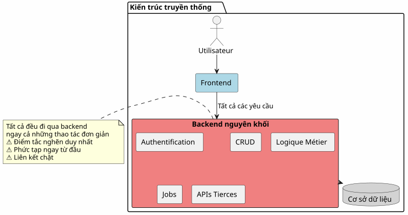
Trong cách tiếp cận này, ngay cả những thao tác đơn giản nhất (đọc một bài viết, tạo một bình luận) cũng phải đi qua backend của bạn. Bạn phải trả giá cho sự phức tạp ngay từ ngày đầu tiên.
Kiến trúc BaaS: Tất cả đều được ủy thác
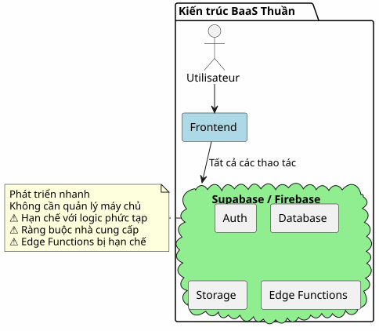
Ngược lại, giao phó mọi thứ cho một BaaS thoạt đầu có vẻ hấp dẫn nhưng nhanh chóng bộc lộ giới hạn ngay khi logic nghiệp vụ trở nên phức tạp.
Kiến trúc lai: Phân tách trách nhiệm
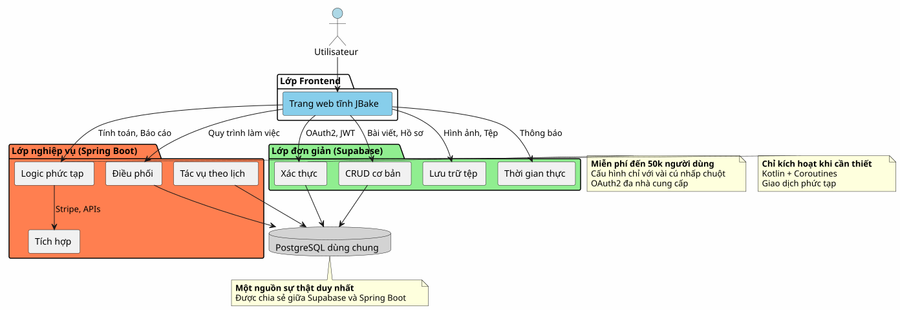
Kiến trúc lai phân tách rõ ràng các trách nhiệm theo độ phức tạp và tính chất của các hoạt động.
Nguyên tắc thiết kế
Nguyên tắc 1: Bắt đầu đơn giản, phát triển thông minh
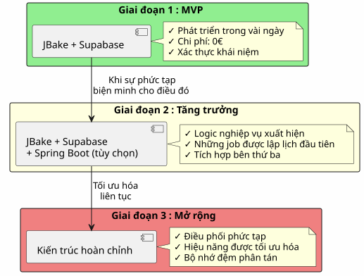
Đừng xây dựng Spring Boot nếu bạn không cần đến nó.Bắt đầu với Supabase, thêm Spring Boot khi độ phức tạp đòi hỏi.
Nguyên tắc 2: Phân tách theo Bản chất Hoạt động
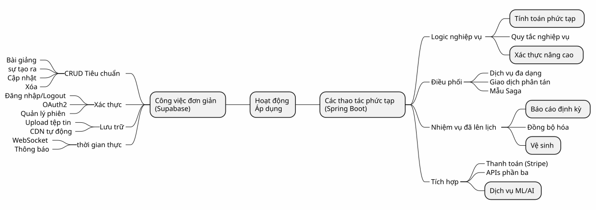
Nguyên tắc 3: Một nguồn sự thật duy nhất
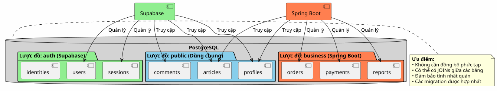
Bằng cách chia sẻ cùng một instance PostgreSQL, Supabase và Spring Boot làm việc trên cùng dữ liệu mà không cần đồng bộ hóa phức tạp.
Điều phối các Luồng
Luồng 1: Xác thực tập trung
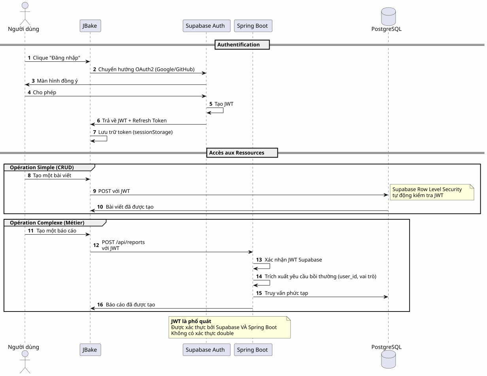
Điểm chính: Một quy trình xác thực duy nhất, một JWT duy nhất, có thể sử dụng ở mọi nơi.
Luồng 2: Điều phối một Quy trình Nghiệp vụ Phức tạp
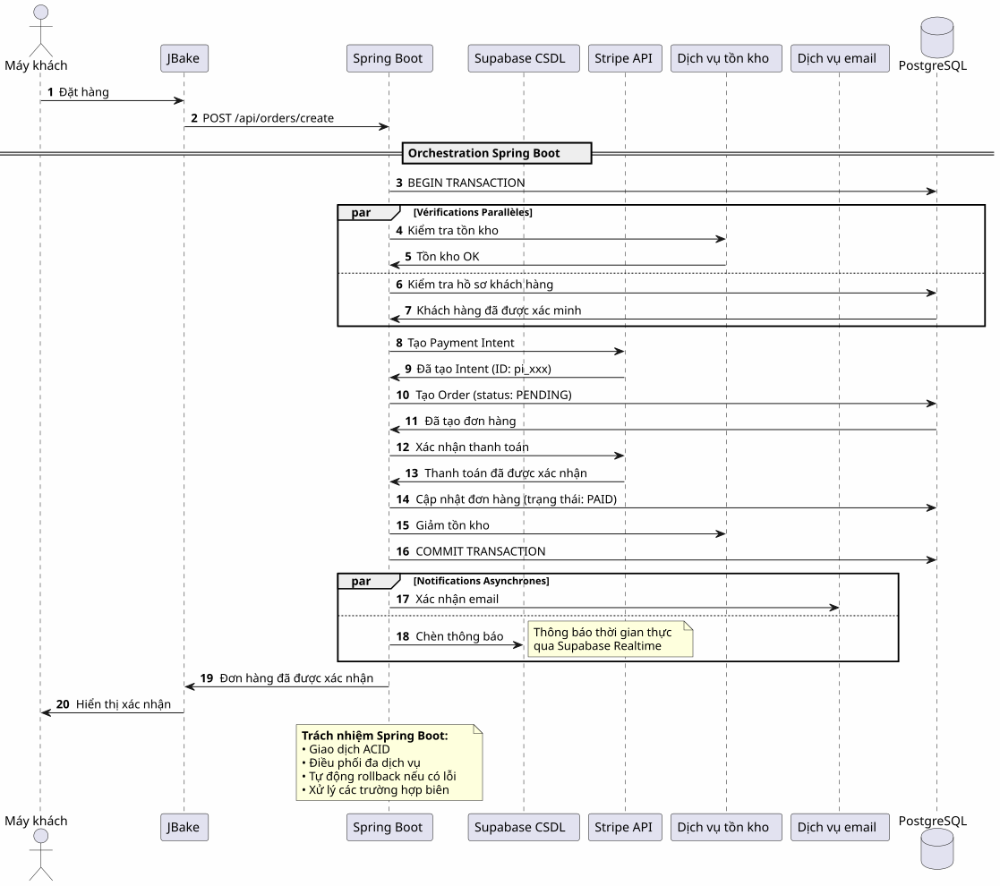
Những gì Spring Boot mang lại: Điều phối đáng tin cậy các quy trình phức tạp liên quan đến nhiều hệ thống với đảm bảo giao dịch.
Luồng 3: Tác vụ theo lịch và Đồng bộ hóa
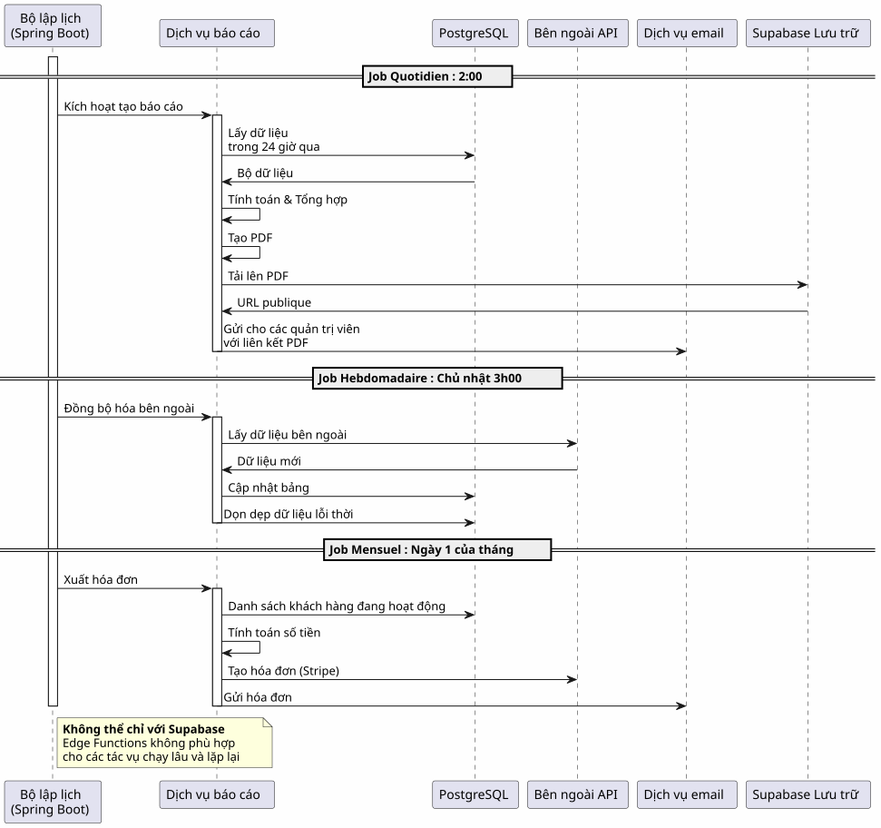
Những gì Spring Boot mang lại: Các tác vụ theo lịch đáng tin cậy với quản lý trạng thái, tự động thử lại và đảm bảo thực thi.
Ma trận Quyết định
Khi nào nên sử dụng Supabase?
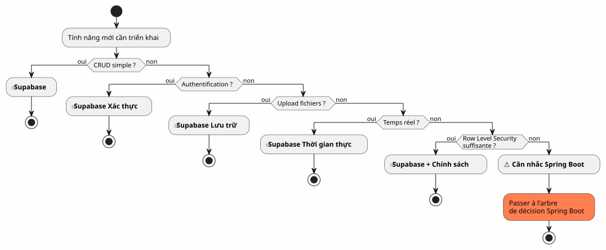
Khi nào nên sử dụng Spring Boot?
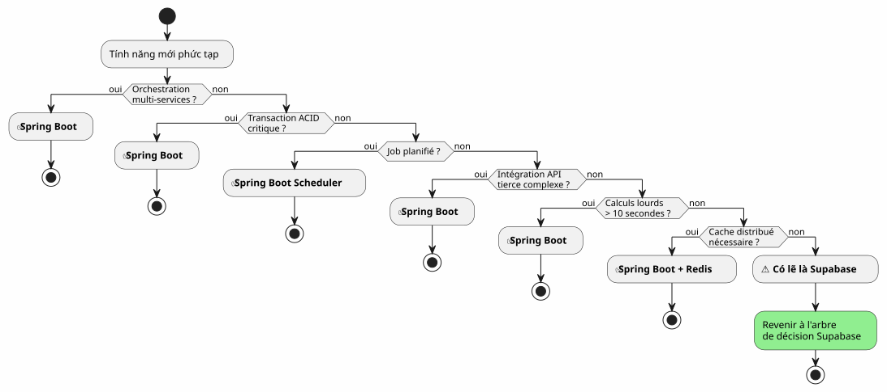
Ví dụ về Kiến trúc theo Loại Dự án
Blog / Hồ sơ năng lực
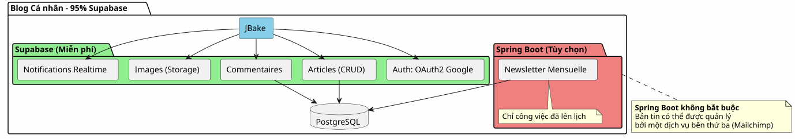
Phán quyết: 100% Supabase là quá đủ.
Ứng dụng SaaS
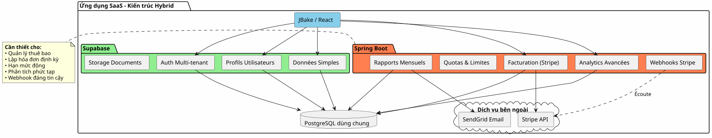
Phán quyết: Kiến trúc lai là cần thiết. Supabase cho phần chính yếu, Spring Boot cho phần trọng yếu (thanh toán, lập hóa đơn).
Thương mại điện tử
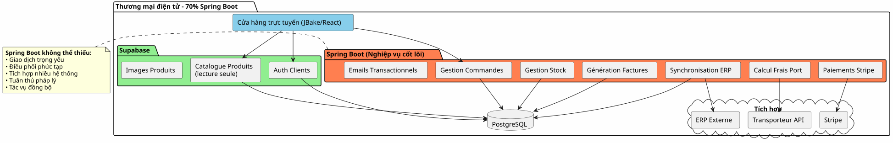
Phán quyết: Spring Boot không thể thiếu. Supabase chỉ dùng cho xác thực và danh mục.
Chiến lược di cư dần dần
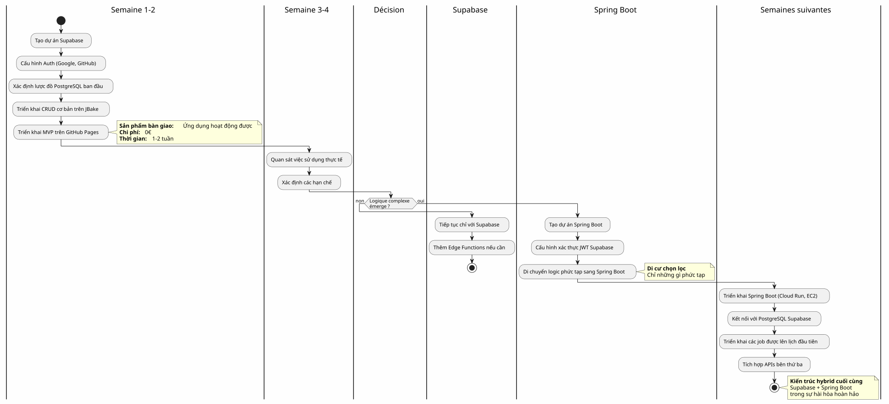
Chi phí và Các Cân nhắc Vận hành
Cơ cấu chi phí
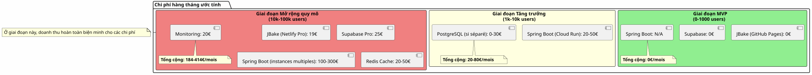
Trách nhiệm vận hành
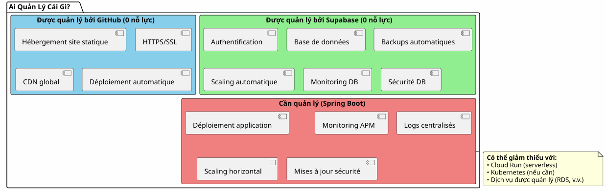
Kết luận: Sự cân bằng hoàn hảo
Kiến trúc lai Supabase + Spring Boot không phải là một sự thỏa hiệp, đó là mộtsự hiệp lực.
Các nguyên tắc cần ghi nhớ
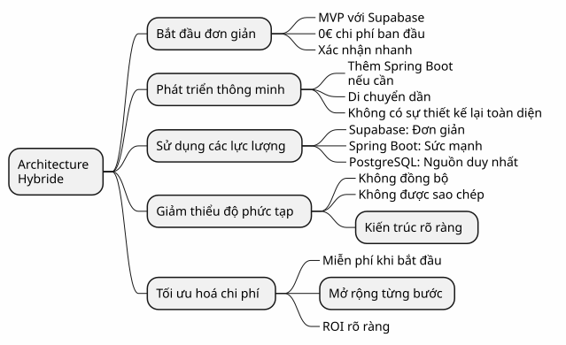
Khi nào nên chọn kiến trúc này?
✅ Kiến trúc này là lý tưởng nếu:
-
Bạn muốn khởi động nhanh chóng (MVP trong vài ngày, không phải vài tháng)
-
Bạn dự đoán sự gia tăng độ phức tạp nghiệp vụ
-
Bạn muốn giảm thiểu chi phí ban đầu
-
Bạn thích PostgreSQL và muốn có một nguồn sự thật duy nhất
-
Bạn thích Kotlin và Coroutines cho code nghiệp vụ
-
Bạn muốn tránh hoàn toàn việc bị khóa vào nhà cung cấp
❌ Kiến trúc này KHÔNG phù hợp nếu:
-
Dự án của bạn đơn giản và sẽ luôn như vậy (blog cá nhân → 100% Supabase là đủ)
-
Bạn đã có một stack backend đã được thiết lập mà bạn thành thạo.
-
Bạn thích một monolith truyền thống hơn
-
Bạn cần .NET, Python hoặc một ngôn ngữ backend khác
Tổng quan cuối cùng
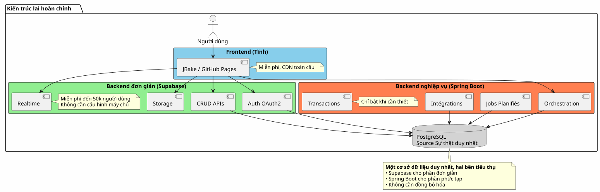
Điều tốt nhất của cả hai thế giới
Kiến trúc này mang lại cho bạn:
🚀 Tốc độ của Supabase
-
Khởi động trong vài giờ, không phải vài tuần
-
Xác thực OAuth2 chỉ trong vài cú nhấp chuột
-
API REST được tạo tự động
-
Không cần cấu hình máy chủ
💪 Sức mạnh của Spring Boot
-
Kotlin và Coroutines cho mã bất đồng bộ thanh lịch
-
Điều phối các quy trình nghiệp vụ phức tạp
-
Các công việc được lên lịch đáng tin cậy
-
Các giao dịch ACID được đảm bảo
-
Hệ sinh thái Spring hoàn chỉnh
💰 Nền kinh tế tiến bộ
-
0€ để bắt đầu và xác nhận
-
Chi phí đi kèm với tăng trưởng
-
Không thiết kế quá mức sớm
🎯 Tính Linh Hoạt Kiến Trúc
-
Di trú dần dần mà không cần tái cấu trúc
-
Thêm Spring Boot chỉ khi cần thiết
-
Không có tình trạng vendor lock-in hoàn toàn
-
Kiến trúc có thể mở rộng
Để đi xa hơn
Tài nguyên Kỹ thuật
Tài liệu Supabase:
Tài liệu Spring Boot:
Sản phẩm bổ sung:
-
Bảo mật API bằng JWT
-
Tối ưu hóa hiệu năng PostgreSQL
-
Các mẫu di chuyển dần dần
-
Xử lý lỗi trong kiến trúc phân tán
Các trường hợp sử dụng thực tế
Kiến trúc lai này được sử dụng thành công trong:
-
SaaS B2B: Xác thực Supabase, thanh toán Spring Boot
-
Các sàn giao dịch: Danh mục Supabase, giao dịch Spring Boot
-
Nền tảng nội dung: Bài viết Supabase, phân tích Spring Boot
-
Công cụ nội bộ: CRUD Supabase, quy trình làm việc Spring Boot
Danh sách kiểm tra khởi động
Giai đoạn 1 - Nền tảng (Tuần 1)
-
Tạo tài khoản Supabase - [ ] Cấu hình dự án PostgreSQL - [ ] Bật Auth (Google, GitHub) - [ ] Xác định sơ đồ ban đầu - [ ] Cấu hình Row Level Security - [ ] Kiểm thử API từ JBake
Giai đoạn 2 - MVP (Tuần 2-3)
-
Triển khai các trang chính - [ ] Tích hợp xác thực OAuth2 - [ ] Tạo biểu mẫu CRUD - [ ] Cấu hình Storage cho các tệp - [ ] Triển khai trên GitHub Pages - [ ] Thử nghiệm trong điều kiện thực tế
Giai đoạn 3 - Phát triển (Tùy theo nhu cầu)
-
Xác định nhu cầu về logic phức tạp - [ ] Tạo dự án Spring Boot nếu cần thiết - [ ] Cấu hình xác thực JWT Supabase - [ ] Kết nối với PostgreSQL Supabase - [ ] Di chuyển các tính năng phức tạp - [ ] Triển khai các job theo lịch - [ ] Triển khai Spring Boot (Cloud Run, v.v.)
Anti-Patterns cần tránh
❌ Không làm:
-
Sao chép dữ liệu giữa Supabase và Spring Boot
-
Tạo hai cơ sở dữ liệu PostgreSQL riêng biệt
-
Tự lập trình xác thực
-
Sử dụng Spring Boot cho CRUD đơn giản
-
Thiết kế kiến trúc quá mức ngay từ đầu
-
Bỏ qua Row Level Security của Supabase
✅ Thay vào đó hãy làm:
-
Chia sẻ một cơ sở dữ liệu PostgreSQL duy nhất
-
Để Supabase xử lý việc xác thực
-
Chỉ sử dụng Spring Boot cho sự phức tạp
-
Bắt đầu đơn giản, phát triển dần dần
-
Khai thác thế mạnh của từng công nghệ
-
Bảo mật bằng RLS ở cấp cơ sở dữ liệu
Triển vọng phát triển
Thêm các khả năng mới
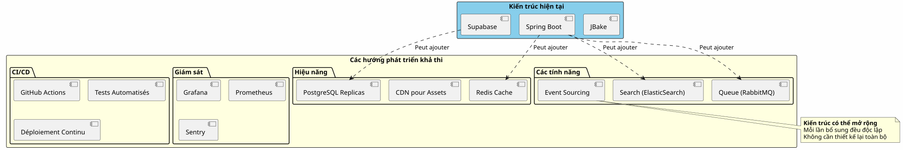
Mở rộng theo chiều ngang
Khi ứng dụng của bạn phát triển, kiến trúc lai sẽ mở rộng quy mô một cách tự nhiên:
Supabase :
-
Tự động mở rộng quy mô lên đến hàng triệu thao tác
-
Read replicas cho hiệu năng đọc
-
Khôi phục theo thời điểm để bảo mật
Spring Boot:
-
Nhiều instance phía sau bộ cân bằng tải
-
Thiết kế phi trạng thái tạo điều kiện cho việc mở rộng theo chiều ngang
-
Kubernetes để điều phối nếu cần thiết
PostgreSQL:
-
Phân vùng cho các bảng lớn
-
Gom nhóm kết nối (PgBouncer)
-
Sharding nếu thật sự cần thiết (hiếm)
Chứng tích kiến trúc
Startup SaaS (50k người dùng)
_ Chúng tôi đã khởi đầu với 100% Supabase. Khi đạt 5k người dùng, chúng tôi chỉ thêm Spring Boot cho việc thanh toán Stripe và báo cáo hàng tháng. Một năm sau, 80% hoạt động của chúng tôi vẫn diễn ra qua Supabase. Spring Boot chỉ xử lý phần quan trọng. Việc tách biệt này giúp chúng tôi mở rộng quy mô mà không cần làm lại kiến trúc. _
Nền tảng E-learning (10k người dùng)
_ Xác thực OAuth2 của Supabase đã giúp chúng tôi tiết kiệm 3 tuần phát triển. Các API tự động tạo xử lý toàn bộ danh mục khóa học của chúng tôi. Spring Boot chỉ dùng cho chứng chỉ PDF và email tiến độ. Kiến trúc đơn giản, dễ bảo trì, có thể mở rộng. _
Sàn giao dịch B2B (3k người dùng)
_ Spring Boot xử lý các giao dịch giữa người mua và người bán (quan trọng). Supabase xử lý mọi thứ còn lại: hồ sơ, nhắn tin thời gian thực, tài liệu. Việc chúng dùng chung cùng một cơ sở dữ liệu PostgreSQL giúp chúng ta tránh được mọi việc đồng bộ phức tạp. Lựa chọn kiến trúc tốt nhất mà chúng ta đã thực hiện. _
Tổng hợp: Một mô hình kiến trúc hiện đại
Kiến trúc lai Supabase + Spring Boot đại diện cho một mô hình mới:chuyên môn hóa kiến trúc.
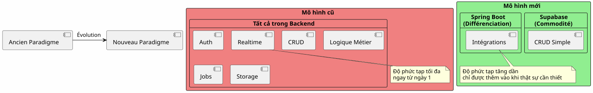
Nguyên tắc cơ bản:Đừng xây dựng những gì đã tồn tại dưới dạng dịch vụ. Hãy tập trung vào những gì tạo nên sự khác biệt cho ứng dụng của bạn.
Quy tắc 80/20
Trong hầu hết các ứng dụng:
-
80% các hoạt độnglà CRUD tiêu chuẩn → Supabase
-
20% các hoạt độngcần logic nghiệp vụ → Spring Boot
Quy tắc tự nhiên này biện minh cho kiến trúc lai.
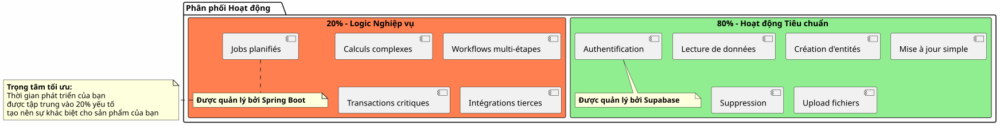
Kết luận cuối cùng
Kiến trúc lai không phải là một thỏa hiệp kỹ thuật, mà là mộtquyết định chiến lược.
Nó cho phép bạn:
-
✅ Bắt đầu nhanh với một MVP hoạt động được
-
✅ Xác thực thị trường của bạn mà không cần đầu tư lớn
-
✅ Tiến triển dần dần khi độ phức tạp đòi hỏi
-
✅ Kiểm soát chi phí của bạn ở từng bước
-
✅ Khai thác điều tốt nhất từ mỗi công nghệ
-
✅ Tránh việc kỹ thuật hóa quá mức quá sớm
-
✅ Duy trì tính linh hoạt cho tương lai
Cô ấy đại diện cho:
-
🎯Chủ nghĩa thực dụng: Mỗi công nghệ mà cô ấy thành thạo
-
🚀Vận tốc: Thời gian đưa sản phẩm ra thị trường tối thiểu
-
💰Kinh tế: Chi phí phù hợp với giá trị
-
🔮Khả năng mở rộng: Kiến trúc phát triển cùng bạn
-
🛡️Độ bền vững: Các dịch vụ đã được kiểm chứng và đáng tin cậy
Bước Tiếp Theo Của Bạn
Nếu kiến trúc này có ý nghĩa với bạn, đây là nơi để bắt đầu:
-
Tạo một tài khoản Supabase(miễn phí)
-
Hãy xác định lược đồ dữ liệu tối thiểu của bạn
-
Cấu hình xác thực OAuth2
-
Tạo trang JBake đầu tiên của bạn sử dụng API
-
Triển khai trên GitHub Pages
Bạn sẽ có một MVP hoạt động trongvài ngày.
Spring Boot sẽ đến một cách tự nhiên khi bạn cần nó. Không phải trước đó.
Kiến trúc lai là nghệ thuật xây dựng chính xác những gì cần thiết, vào đúng thời điểm.
Chúc bạn phát triển tốt! 🚀
Hãy chia sẻ bài viết này nếu bạn nghĩ nó có thể giúp các nhà phát triển khác đưa ra những lựa chọn kiến trúc đúng đắn.